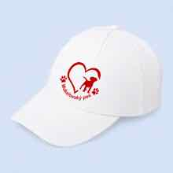

🐶
Představte parťáka
Do komentáře pod soutěžním příspěvkem napište, jak se jmenuje váš pes.
Představte nám svého psího parťáka a zahrajte si o jednu bílou a jednu černou kšiltovku Mukařovský pes. Dva výherci, dvě barvy a spousta nových psích známých.

Soutěž probíhá od zveřejnění soutěžního příspěvku 1. srpna do 16. srpna 2026 do 20:00.
Do komentáře pod soutěžním příspěvkem napište, jak se jmenuje váš pes.
Přidejte, co spolu v létě nejraději podnikáte nebo kam chodíte na výlet.
Na konec komentáře napište nebo vložte emoji ⚪ pro bílou či ⚫ pro černou kšiltovku.
Projděte si odpovědi ostatních. Třeba objevíte nového parťáka na společné venčení.

Jednoho výherce vylosujeme z platných komentářů pro bílou variantu a jednoho z komentářů pro černou variantu.
Zapojení je zdarma a není podmíněno nákupem ani sdílením příspěvku.
Soutěž není žádným způsobem sponzorována, podporována, spravována ani spojena se společnostmi Instagram, Facebook nebo Meta. Účastník tyto platformy zcela zprošťuje odpovědnosti související se soutěží.